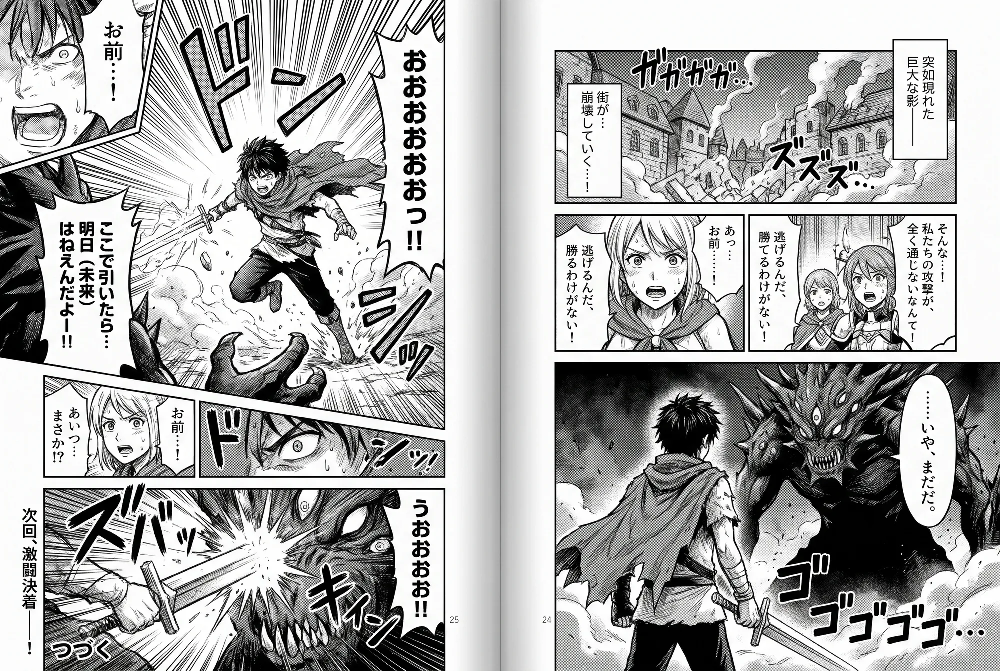

<!doctype html>
<!--
  PROTOTYPE（額度用完的說明＋登出放哪裡），用完即丟，不合回 main。
  問題：免費額度／本月額度用完時，點紅色小標籤或圖示跳過去的那一頁該怎麼說明；不開側邊欄的讀者要怎麼簡單登出、看帳號狀態。
  兩套結構不同的流程，用 ?variant=A|B（或底部切換列、← → 鍵）切換；?scenario= 選情境。
    A 分散式：用完 → onboarding 方案頁的「已用完」版本；右鍵選單「登出 email」；側邊欄頂部 email 小選單。
    B 集中式：右鍵選單「帳號與訂閱」→ 帳號頁；用完也導到帳號頁；側邊欄設定只留摘要＋「管理帳號 →」。
  直接用瀏覽器打開即可，不需要建置，沒有網路請求。登入、付款、翻譯都是假的。
  已定案（grill）：用詞「已用完」不用「結束」；不再出現「先用免費額度」；登出不確認；自備金鑰模式也能登出；
  付款完成直接回漫畫；訂閱者本月用完一起處理；登出後漫畫頁維持現有行為（紅色小標籤「還沒登入・登入」、圖示 !）。
-->
<html lang="zh-Hant">
<head>
<meta charset="utf-8">
<meta name="viewport" content="width=device-width, initial-scale=1">
<title>額度用完與登出 — prototype</title>
<link rel="stylesheet" href="../shared/tokens.css">
<link rel="stylesheet" href="./components.css">
<style>
  * { box-sizing: border-box; }
  /* prototype 外框刻意用深色，跟被評估的設計分開 */
  body { margin: 0; font-family: var(--naru-font-sans); background: #3b3a37; color: #eee; }
  .pt-bar { position: sticky; top: 0; z-index: 50; display: flex; flex-wrap: wrap; gap: 6px 10px; align-items: center; padding: 10px 16px; background: #1d1c1a; font-size: 13px; }
  .pt-bar b { color: #aaa; font-weight: 400; margin-left: 6px; }
  .pt-bar button { border: 1px solid #555; background: #2a2926; color: #ddd; border-radius: 999px; padding: 3px 10px; font: inherit; cursor: pointer; }
  .pt-bar button[aria-pressed='true'] { background: #f2c94c; color: #1d1c1a; border-color: #f2c94c; font-weight: 700; }
  .pt-note { padding: 6px 16px; font-size: 12px; color: #f2c94c; background: #2a2926; }
  .pt-dump { padding: 4px 16px; font-family: var(--naru-font-mono); font-size: 11px; color: #9c9; background: #26251f; height: 24px; line-height: 16px; white-space: nowrap; overflow: hidden; text-overflow: ellipsis; }
  .pt-stage { display: flex; justify-content: center; padding: 16px 16px 96px; }
  .pt-switcher { position: fixed; left: 50%; bottom: 18px; transform: translateX(-50%); z-index: 60; display: flex; align-items: center; gap: 4px; padding: 6px; background: #111; color: #fff; border-radius: 999px; box-shadow: 0 8px 24px rgba(0,0,0,.5); font-size: 14px; }
  .pt-switcher button { width: 36px; height: 36px; border: 0; border-radius: 999px; background: #333; color: #fff; font-size: 18px; cursor: pointer; }
  .pt-switcher span { min-width: 260px; text-align: center; font-weight: 700; }

  /* ---------- 假瀏覽器 ---------- */
  .win { width: min(1200px, 100%); background: #fff; color: var(--naru-ink); border-radius: 10px; overflow: hidden; box-shadow: 0 20px 60px rgba(0,0,0,.4); }
  .tabs { display: flex; gap: 2px; padding: 6px 8px 0; background: #cfd5de; }
  .tab { display: flex; gap: 8px; align-items: center; padding: 7px 14px; border-radius: 8px 8px 0 0; background: #b9c1cd; font-size: 12px; cursor: pointer; max-width: 260px; white-space: nowrap; }
  .tab[aria-selected='true'] { background: #eef1f5; font-weight: 700; }
  .tab i { font-style: normal; color: #666; padding: 0 2px; }
  .tab i:hover { color: #000; }
  .toolbar { position: relative; display: flex; align-items: center; gap: 8px; height: 42px; padding: 0 12px; background: #eef1f5; border-bottom: 1px solid #ccd; }
  .url { flex: 1; background: #fff; border-radius: 999px; padding: 4px 14px; color: #555; font-family: var(--naru-font-mono); font-size: 12px; }
  .ext { position: relative; width: 32px; height: 32px; border: 0; border-radius: 6px; background: transparent; cursor: pointer; display: grid; place-items: center; }
  .ext:hover { background: #dde3ea; }
  .ext img { width: 20px; height: 20px; }
  .badge { position: absolute; right: -2px; bottom: 0; min-width: 16px; height: 14px; padding: 0 3px; border-radius: 4px; font-size: 10px; line-height: 14px; font-weight: 700; color: #fff; text-align: center; background: #c0392b; }
  .badge--on { min-width: 8px; width: 8px; height: 8px; border-radius: 50%; right: 2px; bottom: 3px; padding: 0; background: var(--naru-ok-dot); }
  .hint-r { font-size: 11px; color: #888; }
  .body { display: flex; height: clamp(460px, calc(100vh - 230px), 680px); }

  /* 漫畫網站 */
  .site { position: relative; flex: 1 1 auto; overflow: hidden; background: #2b2b2b; display: flex; align-items: center; justify-content: center; }
  .spread { position: relative; height: calc(100% - 40px); aspect-ratio: 2000 / 1342; }
  .spread img { width: 100%; height: 100%; display: block; }
  .ov { position: absolute; padding: 4px 6px; background: #fff; border-radius: 10px; font-size: 12px; line-height: 1.35; color: #111; box-shadow: 0 0 0 1px rgba(0,0,0,.15); max-width: 16%; }
  .chip { position: absolute; top: 8px; right: 8px; padding: 3px 9px; border-radius: 999px; font-size: 12px; background: #c0392b; color: #fff; white-space: nowrap; cursor: pointer; border: 0; font-family: inherit; }
  .chip:hover { background: #a93226; }

  /* 圖示右鍵選單（模擬 Chrome 原生選單） */
  .ctx { position: absolute; top: 38px; right: 8px; z-index: 30; min-width: 260px; padding: 6px 0; background: #fff; border: 1px solid #ccd; border-radius: 6px; box-shadow: 0 6px 20px rgba(0,0,0,.25); font-size: 13px; }
  .ctx button { display: flex; gap: 8px; width: 100%; padding: 6px 14px; border: 0; background: none; font: inherit; text-align: left; cursor: pointer; color: #222; }
  .ctx button:hover { background: #e8eef7; }
  .ctx hr { border: 0; border-top: 1px solid #e3e3e3; margin: 5px 0; }
  .ctx__check { width: 14px; }
  .ctx__new { margin-left: auto; font-size: 10px; color: #b36b00; }

  /* ---------- side panel（近似現有樣式） ---------- */
  .panel { flex: none; width: 340px; border-left: 1px solid #ccc; display: flex; flex-direction: column; background: var(--naru-surface); font-size: var(--naru-text-label); }
  .panel__chrome { display: flex; justify-content: space-between; align-items: center; height: 30px; padding: 0 10px; background: #dfe3ea; font-size: 12px; }
  .panel__chrome button { border: 0; background: none; cursor: pointer; font-size: 14px; }
  .panel__in { padding: 0 var(--naru-space-3); overflow: auto; flex: 1; position: relative; }
  .ph { display: flex; align-items: center; gap: var(--naru-space-2); margin: var(--naru-space-3) 0; }
  .ph__title { display: flex; align-items: center; gap: 6px; font-weight: 700; font-size: var(--naru-text-body); }
  .ph__sp { flex: 1; }
  .who { display: inline-flex; align-items: center; gap: 4px; max-width: 150px; min-height: 32px; padding: 0 8px; border: 1px solid var(--naru-line); border-radius: var(--naru-radius-pill); background: var(--naru-surface); color: var(--naru-ink-2); font: inherit; font-size: var(--naru-text-caption); cursor: pointer; }
  .who span { overflow: hidden; text-overflow: ellipsis; white-space: nowrap; }
  .who:hover, .who[aria-expanded='true'] { background: var(--naru-surface-2); }
  .menu { position: absolute; right: 12px; top: 48px; z-index: 5; width: 250px; padding: var(--naru-space-3); background: var(--naru-surface); border: 1px solid var(--naru-line); border-radius: var(--naru-radius-md); box-shadow: var(--naru-shadow-1), 0 8px 24px rgba(0,0,0,.12); display: grid; gap: 8px; }
  .menu p { margin: 0; }
  .menu hr { border: 0; border-top: 1px solid var(--naru-line); margin: 2px 0; width: 100%; }
  .tr { list-style: none; padding: 0; margin: 0; display: grid; gap: 10px; }
  .tr li { display: grid; gap: 2px; }
  .tr .ja { font-family: var(--naru-font-ja); }
  .tr .zh { color: var(--naru-ink-2); }
  .tr .zh.none { color: var(--naru-ink-3); font-style: italic; }
  .foot { border-top: 1px solid var(--naru-line); padding: var(--naru-space-2) var(--naru-space-3); display: flex; align-items: center; gap: 8px; font-size: var(--naru-text-caption); }
  .foot__sp { flex: 1; }
  .warn-t { color: var(--naru-warn); }
  .settings h2 { font-size: var(--naru-text-body); margin: var(--naru-space-3) 0 var(--naru-space-2); }
  .settings .cards { display: grid; gap: var(--naru-space-2); }
  .hint { color: var(--naru-ink-3); font-size: var(--naru-text-caption); margin: 0; }
  .stack { display: grid; gap: var(--naru-space-2); }
  .actions { display: flex; flex-wrap: wrap; gap: var(--naru-space-2); margin-top: var(--naru-space-2); }
  .pageback { display: flex; align-items: center; gap: 8px; margin: var(--naru-space-3) 0; font-weight: 700; }

  /* ---------- 外掛的整頁（onboarding／帳號頁），照 onboarding.css ---------- */
  .full { flex: 1; overflow: auto; background: var(--naru-surface-2); padding: var(--naru-space-6) var(--naru-space-4); font-size: var(--naru-text-body); line-height: 1.6; }
  .full a { color: var(--naru-accent); }
  .ob-brand { display: flex; align-items: center; justify-content: center; gap: var(--naru-space-2); margin-bottom: var(--naru-space-4); font-weight: 700; }
  .ob-card { width: min(600px, 100%); margin: 0 auto; padding: var(--naru-space-6); border-radius: var(--naru-radius-md); background: var(--naru-surface); box-shadow: var(--naru-shadow-1); display: grid; gap: var(--naru-space-3); }
  .ob-card > * { margin: 0; }
  .ob-h2 { font-size: 22px; line-height: 1.3; }
  .ob-plan { display: flex; flex-direction: column; align-items: flex-start; gap: var(--naru-space-2); padding: var(--naru-space-4); border: 1px solid var(--naru-accent); box-shadow: 0 0 0 1px var(--naru-accent); border-radius: var(--naru-radius-md); }
  .ob-plan p { margin: 0; }
  .ob-plan__name { display: flex; align-items: center; gap: var(--naru-space-2); font-weight: 700; }
  .ob-big { min-height: 40px !important; padding: 0 var(--naru-space-5) !important; font-size: var(--naru-text-body) !important; }
  .who-line { display: flex; flex-wrap: wrap; align-items: center; gap: 4px 10px; font-size: var(--naru-text-small); color: var(--naru-ink-2); }
  .sec { border-top: 1px solid var(--naru-line); padding-top: var(--naru-space-3); display: grid; gap: var(--naru-space-2); }
  .sec h3 { margin: 0; font-size: var(--naru-text-label); color: var(--naru-ink-3); font-weight: 700; }
  .meter { height: 8px; border-radius: 4px; background: var(--naru-line); overflow: hidden; }
  .meter > i { display: block; height: 100%; background: var(--naru-accent); }
  .meter--warn > i { background: var(--naru-warn); }
  .sec > p { margin: 0; }
  .plan-head { display: flex; align-items: baseline; flex-wrap: wrap; gap: 4px 10px; }
  .plan-name { font-size: 18px; font-weight: 700; }
  .kv { display: flex; justify-content: space-between; gap: 12px; font-size: var(--naru-text-small); }
  .kv span:first-child { color: var(--naru-ink-3); }
  .danger-zone { display: flex; justify-content: space-between; align-items: center; gap: 8px; }
  .toast { position: absolute; left: 50%; bottom: 16px; transform: translateX(-50%); background: #222; color: #fff; padding: 8px 14px; border-radius: 8px; font-size: 13px; z-index: 40; }
</style>
</head>
<body>
<div id="root"></div>
<script>
const VARIANTS = { A: '分散式（方案頁換版本＋右鍵登出）', B: '集中式（帳號頁）' };
const SCENARIOS = {
  freeEnded:    { label: '免費額度用完', signedIn: true, plan: 'free', remaining: 0, mode: 'hosted' },
  monthlyEnded: { label: '本月額度用完（訂閱者）', signedIn: true, plan: 'subscribed', remaining: 0, mode: 'hosted' },
  freeLeft:     { label: '免費剩 32 頁', signedIn: true, plan: 'free', remaining: 32, mode: 'hosted' },
  subscribed:   { label: '訂閱中', signedIn: true, plan: 'subscribed', remaining: 612, mode: 'hosted' },
  ownKey:       { label: '自備金鑰＋帳號還登入著', signedIn: true, plan: 'free', remaining: 12, mode: 'ownKey' },
  signedOut:    { label: '未登入', signedIn: false, plan: 'free', remaining: 0, mode: 'hosted' },
};
const EMAIL = 'reader@example.com';
const RESET = '11 月 15 日';
const MANGA = { id: 'manga', title: '某漫畫網站・第 3 話' };
const EXT = { id: 'ext', title: '' };

const q = new URLSearchParams(location.search);
const S = {
  variant: VARIANTS[q.get('variant')] ? q.get('variant') : 'A',
  scenario: SCENARIOS[q.get('scenario')] ? q.get('scenario') : 'freeEnded',
  panelOpen: q.get('panel') === '1',
};
function reset() {
  Object.assign(S, structuredClone(SCENARIOS[S.scenario]));
  Object.assign(S, { ctx: false, extTab: null, active: 'manga', panelPage: 'main', whoOpen: false, justPaid: false, toast: '', translated: false });
  S.translated = canTranslate();
}
const exhausted = () => S.signedIn && S.mode === 'hosted' && S.remaining === 0;
const canTranslate = () => S.mode === 'ownKey' || (S.signedIn && S.remaining > 0);
const blocked = () => (!canTranslate() ? (S.signedIn ? 'plan' : 'signIn') : null);
const short = (e) => e.replace(/^(.).*?(@.*)$/, '$1…$2');

function setUrl() {
  const p = new URLSearchParams({ variant: S.variant, scenario: S.scenario });
  if (S.panelOpen) p.set('panel', '1');
  history.replaceState(null, '', '?' + p);
}
function toast(t) { S.toast = t; setTimeout(() => { if (S.toast === t) { S.toast = ''; render(); } }, 2200); }

// ---------- 動作 ----------
function openExt(page, why) {
  S.extTab = { page, why };
  S.active = 'ext';
  S.ctx = false;
}
function signOut() {
  S.signedIn = false; S.whoOpen = false; S.ctx = false;
  if (S.mode === 'hosted') S.translated = S.translated; // 已翻好的保留
  toast('已登出');
}
function signIn() { Object.assign(S, { signedIn: true, plan: 'free', remaining: 32 }); S.translated = canTranslate() || S.translated; toast('（模擬）收驗證碼、登入完成'); }
function pay() {
  Object.assign(S, { plan: 'subscribed', remaining: 800, justPaid: true });
  toast('（模擬）Paddle 付款完成，付款分頁自動關閉');
}
function backToManga() {
  S.active = 'manga'; S.extTab = null;
  if (canTranslate()) S.translated = true;
}
function act(a, el) {
  switch (a) {
    case 'variant': S.variant = el.dataset.v; reset(); break;
    case 'scenario': S.scenario = el.dataset.v; reset(); break;
    case 'panel': S.panelOpen = !S.panelOpen; break;
    case 'icon':
      S.ctx = false;
      if (blocked()) openExt(S.variant === 'B' && blocked() === 'plan' ? 'account' : blocked(), 'icon');
      else toast('（已啟動，這個分頁的翻譯照常）');
      break;
    case 'ctx': S.ctx = !S.ctx; break;
    case 'chip': openExt(S.variant === 'B' && blocked() === 'plan' ? 'account' : blocked(), 'chip'); break;
    case 'menuAccount': openExt('account', 'menu'); break;
    case 'menuSignOut': signOut(); break;
    case 'menuOpenPanel': S.panelOpen = true; S.ctx = false; break;
    case 'tab': S.active = el.dataset.v; break;
    case 'closeTab': backToManga(); break;
    case 'who': S.whoOpen = !S.whoOpen; break;
    case 'gear': S.panelPage = 'settings'; S.whoOpen = false; break;
    case 'panelBack': S.panelPage = 'main'; break;
    case 'signOut': signOut(); break;
    case 'signIn': openExt('signIn', 'link'); break;
    case 'doSignIn': signIn(); if (S.variant === 'B') S.extTab = { page: 'account', why: 'menu' }; else backToManga(); break;
    case 'subscribe': pay(); break;
    case 'manage': toast('（模擬）打開 Paddle 的管理訂閱頁'); break;
    case 'delete': toast('（模擬）換到「刪除帳號」確認頁'); break;
    case 'ownKey': toast('（模擬）切到自備金鑰、打開設定'); break;
    case 'back': backToManga(); break;
    case 'manageAccount': openExt('account', 'settings'); break;
  }
  render();
}
document.addEventListener('click', (e) => {
  const el = e.target.closest('[data-act]');
  if (el) { e.preventDefault(); e.stopPropagation(); act(el.dataset.act, el); return; }
  if (S.ctx || S.whoOpen) { S.ctx = false; S.whoOpen = false; render(); }
});
document.addEventListener('contextmenu', (e) => {
  if (e.target.closest('.ext')) { e.preventDefault(); S.ctx = true; render(); }
});
document.addEventListener('keydown', (e) => {
  if (e.target.closest('input,textarea,[contenteditable]')) return;
  if (e.key !== 'ArrowLeft' && e.key !== 'ArrowRight') return;
  const ks = Object.keys(VARIANTS); const i = ks.indexOf(S.variant);
  S.variant = ks[(i + (e.key === 'ArrowRight' ? 1 : ks.length - 1)) % ks.length]; reset(); render();
});

// ---------- 漫畫分頁 ----------
function chipText() {
  if (S.translated) return '';
  if (exhausted()) return (S.plan === 'subscribed' ? '本月額度用完了' : '免費額度用完了') + '・查看方案';
  if (!S.signedIn && S.mode === 'hosted') return '還沒登入・登入';
  return '';
}
function site() {
  const ov = S.translated
    ? `<div class="ov" style="left:8%;top:12%">嗯……這就是傳說中的那家店？</div><div class="ov" style="left:62%;top:20%">別小看我們啊！</div><div class="ov" style="left:30%;top:64%">咦？</div>`
    : '';
  const c = chipText();
  return `<div class="site"><div class="spread">${ov}${c ? `<button class="chip" data-act="chip">${c}</button>` : ''}</div></div>`;
}

// ---------- side panel ----------
function quotaLine() {
  if (!S.signedIn || S.mode !== 'hosted') return '';
  if (S.plan === 'subscribed') return S.remaining === 0 ? `<span class="warn-t">本月額度已用完，${RESET}重置</span>` : `本月剩 ${S.remaining} 頁・${RESET}重置`;
  return S.remaining === 0 ? `<span class="warn-t">免費額度已用完</span>` : `免費額度剩 ${S.remaining} 頁`;
}
function planBadge() {
  if (S.plan === 'subscribed') return `<span class="naru-badge naru-badge--ok"><span class="naru-badge__dot"></span>訂閱中</span>`;
  return `<span class="naru-badge">免費</span>`;
}
function planLines() {
  if (S.plan === 'subscribed') return `本月剩 ${S.remaining} / 800 頁，${RESET}重置<br>下次續訂：2027 年 3 月 15 日`;
  return `免費額度剩 ${S.remaining} / 50 頁`;
}
function whoMenu() {
  if (!S.whoOpen) return '';
  return `<div class="menu">
    <p><strong>${EMAIL}</strong></p>
    <p class="naru-row">${planBadge()}<span class="hint">${S.mode === 'ownKey' ? '目前用自備金鑰翻譯' : quotaLine()}</span></p>
    <hr>
    <div class="naru-row"><button class="naru-btn naru-btn--secondary" data-act="signOut">登出</button></div>
  </div>`;
}
function panelMain() {
  const showWho = S.variant === 'A' && S.signedIn;
  const header = `<div class="ph"><span class="ph__title">Naruhodo</span>
    <span class="naru-badge naru-badge--ok"><span class="naru-badge__dot"></span>已啟動</span><span class="ph__sp"></span>
    ${showWho ? `<button class="who" data-act="who" aria-expanded="${S.whoOpen}" title="${EMAIL}">👤 <span>${short(EMAIL)}</span> ▾</button>` : ''}
    <button class="naru-btn naru-btn--icon" data-act="gear" aria-label="設定">⚙</button></div>`;
  let callout = '';
  if (exhausted() && !S.translated) {
    callout = S.plan === 'subscribed'
      ? `<div class="naru-callout naru-callout--warn naru-callout--stack"><p><strong>本月額度已用完，${RESET}重置</strong></p><p>已翻過的頁面照常顯示譯文；新的頁面先顯示原文與讀音，重置後就能繼續翻。</p></div>`
      : `<div class="naru-callout naru-callout--warn naru-callout--stack"><p><strong>免費額度已用完</strong></p><p>已翻過的頁面照常顯示譯文；新的頁面先顯示原文與讀音。訂閱後每月可翻 800 頁。</p><div class="naru-row"><button class="naru-btn naru-btn--primary" data-act="subscribe">訂閱</button><button class="naru-btn naru-btn--link" data-act="ownKey">使用自備金鑰</button></div></div>`;
  } else if (!S.signedIn && S.mode === 'hosted') {
    callout = `<div class="naru-callout naru-callout--warn naru-callout--stack"><p><strong>尚未登入</strong></p><p>只顯示原文與讀音。</p><div class="naru-row"><button class="naru-btn naru-btn--primary" data-act="signIn">登入</button></div></div>`;
  }
  const zh = (t) => (S.translated ? `<span class="zh">${t}</span>` : `<span class="zh none">（未翻譯）</span>`);
  const footBtn = exhausted() && !S.translated
    ? (S.plan === 'subscribed' ? '' : `<button class="naru-btn naru-btn--primary" data-act="subscribe">訂閱</button>`)
    : `<button class="naru-btn naru-btn--secondary">翻譯此頁</button>`;
  return `${header}${whoMenu()}<div class="stack">${callout}
    <ol class="tr"><li><span class="ja" lang="ja">ここが噂の店か……</span>${zh('嗯……這就是傳說中的那家店？')}</li>
    <li><span class="ja" lang="ja">なめんなよ！</span>${zh('別小看我們啊！')}</li><li><span class="ja" lang="ja">え？</span>${zh('咦？')}</li></ol></div>`
    + `</div><div class="foot"><span>某作品・第 3 話</span><span class="foot__sp"></span><span>${quotaLine()}</span>${footBtn}`;
}
function hostedCardBody() {
  if (!S.signedIn) return `<p>尚未登入。</p><div class="actions"><button class="naru-btn naru-btn--primary" data-act="signIn">登入</button></div>`;
  if (S.variant === 'B')
    return `<p class="naru-row">${EMAIL} ${planBadge()}</p><p class="hint">${S.plan === 'subscribed' ? `本月剩 ${S.remaining} / 800 頁` : `免費額度剩 ${S.remaining} / 50 頁`}</p>
      <div class="actions"><button class="naru-btn naru-btn--secondary" data-act="manageAccount">管理帳號 →</button></div>`;
  return `<p class="naru-row">${EMAIL} ${planBadge()}</p><p class="hint">${planLines()}</p>
    <div class="actions">${S.plan === 'subscribed' ? `<button class="naru-btn naru-btn--secondary" data-act="manage">管理訂閱</button>` : `<button class="naru-btn naru-btn--primary" data-act="subscribe">訂閱</button>`}
    <button class="naru-btn naru-btn--secondary" data-act="signOut">登出</button><button class="naru-btn naru-btn--ghost naru-text-danger" data-act="delete">刪除帳號</button></div>`;
}
function panelSettings() {
  const hosted = S.mode === 'hosted';
  // 現況：只有勾選的卡片會展開。自備金鑰模式下帳號還登入著時，帳號區塊另外放在卡片外（Q9）。
  const strayAccount = !hosted && S.signedIn
    ? `<h2>帳號</h2><div class="naru-radio-card">${hostedCardBody().replace('naru-btn--primary" data-act="subscribe"', 'naru-btn--secondary" data-act="subscribe"')}<p class="hint" style="margin-top:6px">目前用自備金鑰翻譯，不會用到這個帳號的頁數。</p></div>`
    : '';
  return `<div class="pageback"><button class="naru-btn naru-btn--icon" data-act="panelBack">←</button>設定</div>
  <section class="settings"><h2 style="margin-top:0">翻譯方式</h2><div class="cards">
    <div class="naru-radio-card ${hosted ? 'naru-radio-card--on' : ''}"><label class="naru-radio-card__head"><input type="radio" ${hosted ? 'checked' : ''}><span class="naru-radio-card__text"><span>內建翻譯</span><span class="naru-radio-card__desc">用 email 帳號，Naruhodo 代為翻譯，有頁數限制</span></span></label>
      ${hosted ? `<div class="naru-radio-card__body">${hostedCardBody()}</div>` : ''}</div>
    <div class="naru-radio-card ${!hosted ? 'naru-radio-card--on' : ''}"><label class="naru-radio-card__head"><input type="radio" ${!hosted ? 'checked' : ''}><span class="naru-radio-card__text"><span>自備金鑰</span><span class="naru-radio-card__desc">用你自己的 Anthropic API key，沒有頁數限制</span></span></label>
      ${!hosted ? `<div class="naru-radio-card__body"><p class="hint">sk-ant-••••••••••••</p></div>` : ''}</div>
  </div>${strayAccount}<h2>資料</h2><p class="hint">匯出／匯入（略）</p></section></div><div class="foot" style="display:none">`;
}
function panel() {
  if (!S.panelOpen) return '';
  return `<aside class="panel"><div class="panel__chrome"><span>Naruhodo</span><button data-act="panel" title="關閉側邊欄">✕</button></div>
    <div class="panel__in">${S.panelPage === 'settings' ? panelSettings() : panelMain()}</div></aside>`;
}

// ---------- 外掛整頁 ----------
function subscribeCard() {
  return `<section class="ob-plan"><p class="ob-plan__name">訂閱 <span class="naru-badge naru-badge--solid">年繳</span></p>
    <div class="naru-price-pair"><div class="naru-price-pair__box"><div class="naru-price-pair__side"><span class="naru-price-pair__k">你付</span><span class="naru-price-pair__v">US$20<small>／年</small></span><span class="naru-price-pair__s">一年扣款一次</span></div>
    <div class="naru-price-pair__side naru-price-pair__side--avg"><span class="naru-price-pair__k">平均</span><span class="naru-price-pair__v">US$1.67<small>／月</small></span><span class="naru-price-pair__s">每月 800 頁</span></div></div></div>
    <p class="hint">從訂閱那天起每月同一天重置。隨時取消，用到這一年結束。</p>
    <button class="naru-btn naru-btn--primary ob-big" data-act="subscribe">訂閱</button></section>`;
}
const paidBlock = () => `<h2 class="ob-h2">訂閱完成</h2><div class="naru-callout naru-callout--info"><p>✓ 已訂閱：每月可翻 800 頁，每個月的今天重置。</p></div>
  <p>回到漫畫分頁後，剛才沒翻的頁面會接著翻。</p><div><button class="naru-btn naru-btn--primary ob-big" data-act="back">回到漫畫</button></div>`;

// A：onboarding 方案頁的「已用完」版本（沒有步驟圓點、沒有上一步、沒有「先用免費額度」）
function pageA_plan() {
  if (S.justPaid) return paidBlock();
  const whoLine = `<p class="who-line">已登入 <strong>${EMAIL}</strong><button class="naru-btn naru-btn--link" data-act="signOut">不是這個帳號？登出</button></p>`;
  if (S.plan === 'subscribed')
    return `<h2 class="ob-h2">本月額度已用完，${RESET}重置</h2>${whoLine}
      <p>這個月的 800 頁已經翻完。已翻過的頁面照常顯示譯文；新的頁面先顯示原文與讀音，${RESET}重置後就會繼續翻。</p>
      <div><button class="naru-btn naru-btn--primary ob-big" data-act="back">回到漫畫</button></div>
      <p class="hint">等不及的話，也可以<button class="naru-btn naru-btn--link" data-act="ownKey">改用自備金鑰</button>，沒有頁數限制。</p>`;
  return `<h2 class="ob-h2">免費額度已用完</h2>${whoLine}
    <p>50 頁免費額度已經用完。已翻過的頁面照常顯示譯文；新的頁面先顯示原文與讀音。訂閱後每月可翻 800 頁。</p>
    ${subscribeCard()}
    <p class="hint">或者<button class="naru-btn naru-btn--link" data-act="ownKey">使用自備金鑰</button>：用你自己的 Anthropic API key，沒有頁數限制。</p>`;
}
function pageSignIn() {
  return `<h2 class="ob-h2">同意並登入</h2><p>輸入 email，我們會寄一組驗證碼給你。</p>
    <div class="naru-row"><input style="min-height:36px;padding:0 8px;border:1px solid var(--naru-line-strong);border-radius:6px;font:inherit;flex:1" value="${EMAIL}"><button class="naru-btn naru-btn--primary" data-act="doSignIn">寄驗證碼（模擬直接登入）</button></div>`;
}
// B：帳號頁（所有帳號狀態的家）
function pageB_account() {
  if (!S.signedIn)
    return `<h2 class="ob-h2">帳號與訂閱</h2><p>尚未登入。登入後就能用內建翻譯，新帳號有 50 頁免費額度。</p>
      <div><button class="naru-btn naru-btn--primary ob-big" data-act="signIn">登入</button></div>
      <p class="hint">也可以不登入，<button class="naru-btn naru-btn--link" data-act="ownKey">使用自備金鑰</button>。</p>`;
  let top = '';
  if (S.justPaid) top = `<div class="naru-callout naru-callout--info naru-callout--stack"><p><strong>✓ 訂閱完成</strong></p><p>每月可翻 800 頁。回到漫畫分頁後，剛才沒翻的頁面會接著翻。</p><div><button class="naru-btn naru-btn--primary" data-act="back">回到漫畫</button></div></div>`;
  else if (exhausted() && S.plan === 'subscribed')
    top = `<div class="naru-callout naru-callout--warn naru-callout--stack"><p><strong>本月額度已用完，${RESET}重置</strong></p><p>已翻過的頁面照常顯示譯文；新的頁面先顯示原文與讀音，重置後就會繼續翻。</p><div><button class="naru-btn naru-btn--secondary" data-act="back">回到漫畫</button></div></div>`;
  else if (exhausted())
    top = `<div class="naru-callout naru-callout--warn naru-callout--stack"><p><strong>免費額度已用完</strong></p><p>已翻過的頁面照常顯示譯文；新的頁面先顯示原文與讀音。</p></div>`;
  // 進度條畫「剩下多少」，跟旁邊的「剩 N 頁」同一個方向：用完＝空的，不會看起來像「滿了」
  const total = S.plan === 'subscribed' ? 800 : 50;
  const low = S.remaining <= 5;
  const meter = `<div class="meter ${low ? 'meter--warn' : ''}"><i style="width:${Math.round((S.remaining / total) * 100)}%"></i></div>`;
  const left = S.remaining === 0
    ? `<span class="warn-t">${S.plan === 'subscribed' ? '本月已用完' : '已用完'}</span>`
    : `<span class="${low ? 'warn-t' : ''}">剩 ${S.remaining} / ${total} 頁</span>`;
  const planSec = S.plan === 'subscribed'
    ? `<section class="sec"><h3>目前方案</h3>
        <div class="plan-head"><span class="plan-name">訂閱（年繳）</span>${planBadge()}</div>
        <div class="kv"><span>本月額度</span>${left}</div>${meter}
        <div class="kv"><span>重置</span><span>${RESET}</span></div><div class="kv"><span>下次續訂</span><span>2027 年 3 月 15 日・US$20</span></div>
        <div><button class="naru-btn naru-btn--secondary" data-act="manage">管理訂閱（付款方式、取消）</button></div></section>`
    : `<section class="sec"><h3>目前方案</h3>
        <div class="plan-head"><span class="plan-name">免費</span><span class="hint">新帳號一次 50 頁，不會過期</span></div>
        <div class="kv"><span>免費額度</span>${left}</div>${meter}</section>
      <section class="sec"><h3>訂閱</h3>
        <p>每月可翻 800 頁，從訂閱那天起每月同一天重置。隨時取消，用到這一年結束。</p>
        <div class="naru-price-pair"><div class="naru-price-pair__box"><div class="naru-price-pair__side"><span class="naru-price-pair__k">你付</span><span class="naru-price-pair__v">US$20<small>／年</small></span><span class="naru-price-pair__s">一年扣款一次</span></div>
        <div class="naru-price-pair__side naru-price-pair__side--avg"><span class="naru-price-pair__k">平均</span><span class="naru-price-pair__v">US$1.67<small>／月</small></span><span class="naru-price-pair__s">每月 800 頁</span></div></div></div>
        <div><button class="naru-btn naru-btn--primary ob-big" data-act="subscribe">訂閱</button></div></section>`;
  const ownKeyNote = S.mode === 'ownKey' ? `<div class="naru-callout naru-callout--info"><p>目前用自備金鑰翻譯，不會用到這個帳號的頁數。</p></div>` : '';
  return `<h2 class="ob-h2">帳號與訂閱</h2>${top}${ownKeyNote}
    <section class="sec"><h3>登入的帳號</h3><div class="danger-zone"><strong>${EMAIL}</strong><button class="naru-btn naru-btn--secondary" data-act="signOut">登出</button></div></section>
    ${planSec}
    <section class="sec"><div class="danger-zone"><span class="hint">刪除帳號會一併取消訂閱，免費額度不會退回。</span><button class="naru-btn naru-btn--ghost naru-text-danger" data-act="delete">刪除帳號</button></div></section>`;
}
function extPage() {
  const p = S.extTab.page;
  // A 的方案頁：登出後換成登入；B 的帳號頁自己處理未登入
  let inner;
  if (p === 'account') inner = pageB_account();
  else if (p === 'plan') inner = S.signedIn ? pageA_plan() : pageSignIn();
  else inner = S.signedIn ? (S.variant === 'B' ? pageB_account() : `<h2 class="ob-h2">已登入</h2><p>${EMAIL}</p><div><button class="naru-btn naru-btn--primary ob-big" data-act="back">回到漫畫</button></div>`) : pageSignIn();
  return `<div class="full"><div class="ob-brand">Naruhodo</div><main class="ob-card">${inner}</main></div>`;
}
function extTitle() {
  const p = S.extTab.page;
  if (p === 'account') return '帳號與訂閱 — Naruhodo';
  if (p === 'plan') return '方案 — Naruhodo';
  return '登入 — Naruhodo';
}

// ---------- 右鍵選單 ----------
function ctxMenu() {
  if (!S.ctx) return '';
  let extra = '';
  if (S.variant === 'A') extra = S.signedIn ? `<hr><button data-act="menuSignOut"><span class="ctx__check"></span>登出 ${short(EMAIL)}<span class="ctx__new">新</span></button>` : '';
  else extra = `<hr><button data-act="menuAccount"><span class="ctx__check"></span>帳號與訂閱<span class="ctx__new">新</span></button>`;
  return `<div class="ctx"><button><span class="ctx__check">✓</span>啟動時打開側邊欄</button><button data-act="menuOpenPanel"><span class="ctx__check"></span>打開側邊欄</button>${extra}
    <hr><button style="color:#999"><span class="ctx__check"></span>（Chrome 自己的：釘選、移除擴充功能…）</button></div>`;
}

// ---------- 整體 ----------
function note() {
  if (S.variant === 'A') return 'A：點紅色小標籤或圖示（額度用完時）→ 方案頁的「已用完」版本，email 旁有「不是這個帳號？登出」。右鍵圖示 →「登出 r…@…」。打開側邊欄 → 頂部 👤 小選單有登出；⚙ 設定頁照舊（自備金鑰模式時帳號另外列出來）。';
  return 'B：右鍵圖示 →「帳號與訂閱」打開帳號頁（email、方案、剩幾頁、訂閱／管理、登出、刪除帳號）。額度用完時點紅色小標籤或圖示也到這一頁，頂部是說明。側邊欄 ⚙ 設定只剩摘要＋「管理帳號 →」。';
}
function render() {
  setUrl();
  const tabs = [MANGA, ...(S.extTab ? [{ id: 'ext', title: extTitle() }] : [])];
  const b = blocked();
  const badge = b && !S.translated ? '<span class="badge">!</span>' : '<span class="badge badge--on"></span>';
  const url = S.active === 'manga' ? 'https://manga.example/series/42/episode/3' : `chrome-extension://naruhodo/${S.extTab.page === 'account' ? 'account' : 'onboarding'}.html`;
  const view = S.active === 'manga' ? site() + panel() : extPage();
  const dump = { variant: S.variant, signedIn: S.signedIn, plan: S.plan, remaining: S.remaining, mode: S.mode, blocked: b, translated: S.translated, extTab: S.extTab, panel: S.panelOpen ? S.panelPage : 'closed', justPaid: S.justPaid };
  document.getElementById('root').innerHTML = `
  <div class="pt-bar">情境<b></b>${Object.entries(SCENARIOS).map(([k, v]) => `<button data-act="scenario" data-v="${k}" aria-pressed="${S.scenario === k}">${v.label}</button>`).join('')}
    <b>｜</b><button data-act="panel" aria-pressed="${S.panelOpen}">側邊欄${S.panelOpen ? '開' : '關'}</button></div>
  <div class="pt-note">${note()}</div>
  <div class="pt-dump">${JSON.stringify(dump)}</div>
  <div class="pt-stage"><div class="win">
    <div class="tabs">${tabs.map((t) => `<div class="tab" data-act="tab" data-v="${t.id}" aria-selected="${S.active === t.id}">${t.title}${t.id === 'ext' ? '<i data-act="closeTab">✕</i>' : ''}</div>`).join('')}</div>
    <div class="toolbar"><div class="url">${url}</div><span class="hint-r">左鍵＝點圖示，右鍵＝選單 →</span>
      <button class="ext" data-act="icon" title="漫畫翻譯">${badge}</button>${ctxMenu()}</div>
    <div class="body" style="position:relative">${view}${S.toast ? `<div class="toast">${S.toast}</div>` : ''}</div>
  </div></div>
  <div class="pt-switcher"><button data-act="variant" data-v="${S.variant === 'A' ? 'B' : 'A'}">←</button><span>${S.variant}（${VARIANTS[S.variant]}）</span><button data-act="variant" data-v="${S.variant === 'A' ? 'B' : 'A'}">→</button></div>`;
}
reset();
render();
</script>
</body>
</html>
